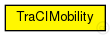

This documentation is released under the Creative Commons license
This documentation is released under the Creative Commons licenseUsed in modules created by the TraCIScenarioManager.
This module relies on the TraCIScenarioManager for state updates and can not be used on its own.
See the Veins website for a tutorial, documentation, and publications .
Author: Christoph Sommer, David Eckhoff, Luca Bedogni, Bastian Halmos, Stefan Joerer
See also: TraCIScenarioManager
See also: TraCIScenarioManagerLaunchd
The following diagram shows usage relationships between types. Unresolved types are missing from the diagram. Click here to see the full picture.
| Name | Type | Description |
|---|---|---|
| BaseMobility | simple module |
Module which is responsible for mobility related information like position and movement BaseMobility itself defines a static mobility pattern (means only a position, no movement). Mobility modules which extend from this module will define more complex movement patterns. |
| Name | Type | Default value | Description |
|---|---|---|---|
| notAffectedByHostState | bool | true | |
| x | double |
x coordinate of the nodes' position (-1 = random) |
|
| y | double |
y coordinate of the nodes' position (-1 = random) |
|
| z | double |
z coordinate of the nodes' position (-1 = random) |
|
| xOrientation | double | 1 | |
| yOrientation | double | 0 | |
| zOrientation | double | 0 | |
| hostPositionOffset | double | 0.0m |
shift OMNeT++ module this far from front of the car |
| setHostSpeed | bool | false |
whether to update the speed of the host (along with its position) |
| accidentCount | int | 0 |
number of accidents |
| accidentStart | double | uniform(30s,60s) |
time until first accident, relative to departure time |
| accidentDuration | double | uniform(30s,60s) |
duration of accident |
| accidentInterval | double | uniform(30s,60s) |
time between accidents |
| Name | Value | Description |
|---|---|---|
| class | veins::TraCIMobility | |
| display | i=block/cogwheel |
| Name | Type | Unit |
|---|---|---|
| org_car2x_veins_modules_mobility_parkingStateChanged | veins::TraCIMobility |
This documentation is released under the Creative Commons license